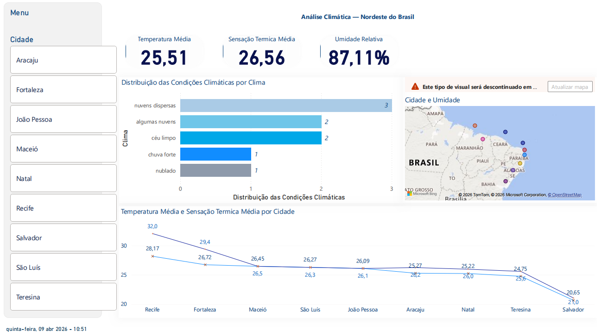

Transformo dados em decisões mais inteligentes
Desenvolvo dashboards, automações e estruturas de dados com foco em clareza, eficiência operacional e apoio real à tomada de decisão.
Portfólio com cara de produto
Projetos desenvolvidos para resolver problemas reais com visual limpo, contexto claro e foco em valor para operação e gestão.

Sistema de Gestão de Contratos
Projeto voltado à centralização de contratos, alertas automáticos, acompanhamento de vigências e apoio visual à gestão.
Indicadores operacionais e gerenciais
Construção de visões analíticas para leitura de cenário, monitoramento de desempenho e suporte à tomada de decisão.
O que fortalece meu perfil
Visão de processo
Leitura de fluxos, organização de etapas e melhoria contínua para soluções mais consistentes.
Automação aplicável
Uso de ferramentas para reduzir esforço manual, padronizar dados e tornar rotinas mais eficientes.
Dados + Cloud
Dashboards, indicadores e visão de cloud computing para soluções mais estruturadas e escaláveis.
Ferramentas que uso para entregar valor
Fundamentos de cloud computing, arquitetura básica e serviços essenciais da AWS aplicados ao contexto de dados.
Dashboards interativos, indicadores e visualizações voltadas ao acompanhamento gerencial.
Painéis visuais e monitoramento de métricas com foco em leitura simples e rápida.
Automação de rotinas, regras de negócio, integrações e estruturação de bases.
Quem está por trás dos projetos
Tenho foco em transformar dados, processos e rotinas em soluções mais organizadas, visuais e úteis para acompanhamento e tomada de decisão.
Minha experiência reúne análise de processos, dashboards, automação de tarefas e estruturação de informações para uso gerencial e operacional.
Busco criar entregas modernas, funcionais e com leitura clara, unindo estética, contexto e aplicabilidade real.
Dados, tecnologia e decisões que funcionam
Projetos pensados com estratégia, clareza e execução eficiente — do dado à decisão, com foco no que realmente importa.